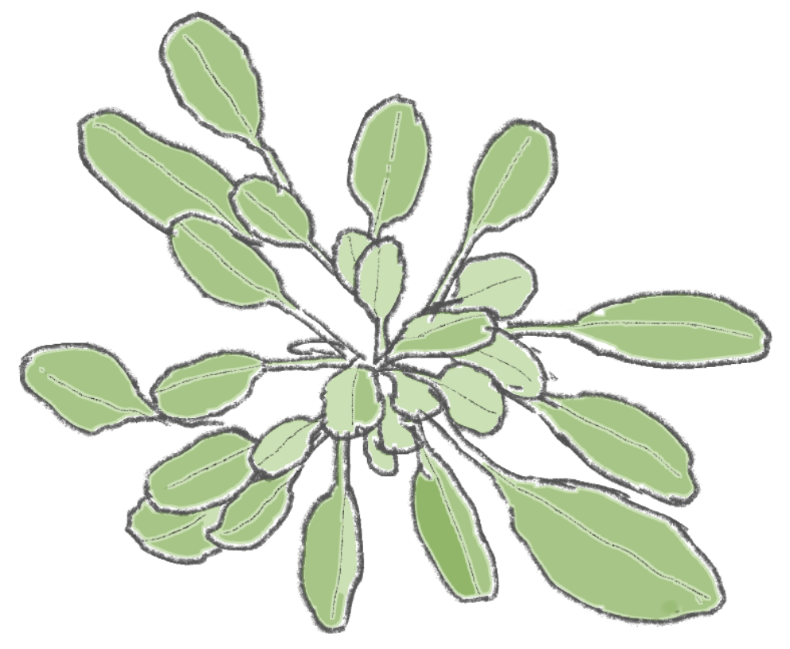
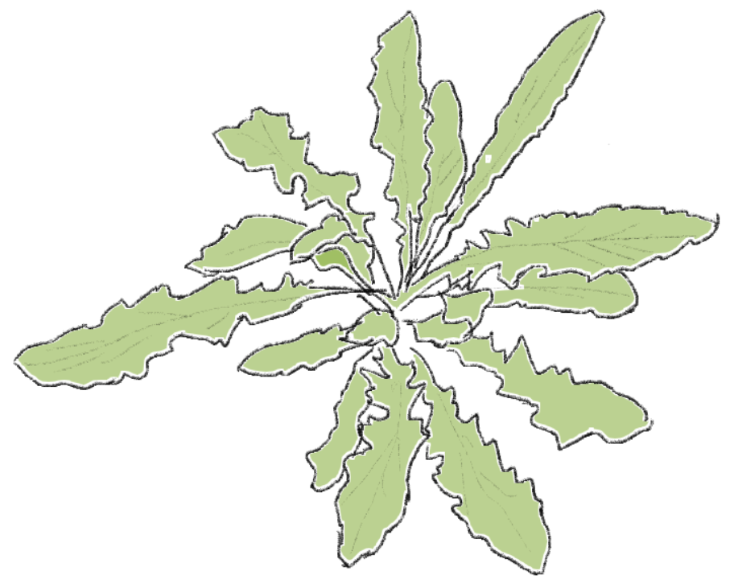

一年草（いちねんそう）
一年草は、その名の通り、一年のうちに生まれて育ち、花を咲かせて種を残して終わる植物です。 次の春、また芽を出す準備をする種を残すのが彼らの大事なお仕事です。
越年草（えつねんそう）
越年草は、秋に芽を出して冬を越し、春になるとぐんぐん成長して花を咲かせ、種を残す植物です。 寒い冬をじっと耐えることで、春の訪れとともに他の植物より早く育ち始めることができます。
多年草（たねんそう）

多年草は、一度植えると何年も花を咲かせたり実をつけたりしてくれる植物です。 毎年少しずつ株が大きくなります。植えっぱなしで楽しめるのは嬉しいポイント。